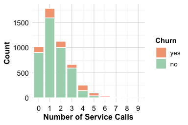
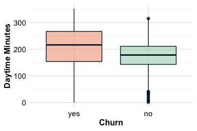
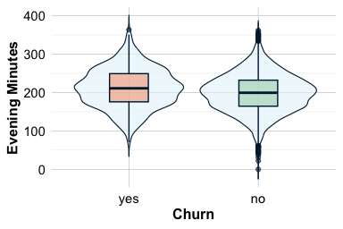
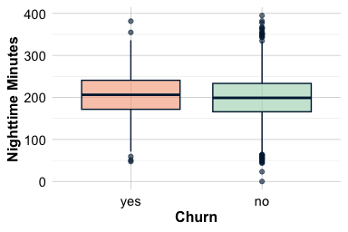
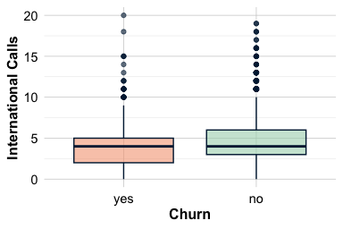
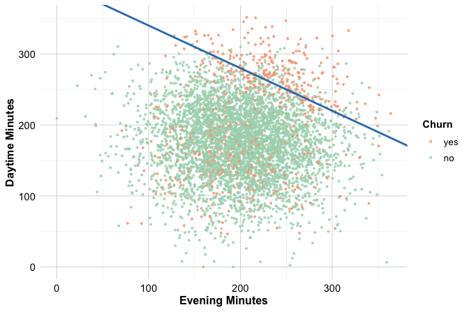

| Exploratory.Objective | Applicable.Data.Type | Recommended.Techniques |
|---|---|---|
| Examine a variable’s distribution | Numerical | Histogram, box plot, density plot, summary statistics |
| Summarize a categorical variable | Categorical | Bar chart, frequency table |
| Identify outliers | Numerical | Box plot, histogram |
| Detect missing data patterns | Any | Summary statistics, missingness maps |
| Explore the relationship between two numerical variables | Numerical & Numerical | Scatter plot, correlation coefficient |
| Compare a numerical variable across groups | Numerical & Categorical | Box plot, grouped bar chart, violin plot |
| Analyze interactions between two categorical variables | Categorical & Categorical | Stacked bar chart, mosaic plot, contingency table |
| Assess correlation among multiple numerical variables | Multiple Numerical | Correlation matrix, scatterplot matrix |
4 Exploratory Data Analysis
Exploratory Data Analysis (EDA) is the essential first step before building models or conducting statistical inference. It involves examining data carefully, thoroughly, and creatively to uncover insights. EDA helps reveal unexpected patterns, spot anomalies, and highlight relationships that shape the direction of further analysis.
EDA plays a pivotal role in the Data Science Workflow (see Figure 2.3), functioning as the bridge between Data Preparation (Chapter 3) and (Chapter 6). This phase deepens our understanding of the data’s structure, quality, and potential, ensuring that downstream decisions rest on a solid foundation.
Unlike formal hypothesis testing, EDA is not rigid or sequential. It is an iterative, open-ended process that invites curiosity. Different datasets pose different questions. Some exploratory paths reveal meaningful trends, while others point to data issues or dead ends. Through iterative exploration, analysts develop intuition and refine their focus, ultimately identifying the most informative features for modeling.
The primary aim of EDA is not to confirm theories, but to generate insight. Summary statistics, exploratory visualizations, and correlation measures offer an initial map of the data landscape. Such exploratory findings must be interpreted with caution, as they are preliminary and may not reflect causal relationships. Later chapters, particularly Chapter 5, will introduce formal tools for inference and prediction.
EDA also emphasizes the importance of practical relevance. In large datasets, even weak patterns can be statistically significant but lack real-world utility. For example, a weak correlation between customer engagement and churn may appear significant due to sample size, yet offer little actionable value. Integrating domain knowledge is essential for interpreting such findings.
Finally, EDA is closely tied to data quality. Outliers, missing values, inconsistent formats, and redundant variables often come to light during exploration. Addressing these issues early is critical for building effective and trustworthy models. The choice of EDA techniques depends on both the characteristics of the data and the analytical questions at hand. Histograms and box plots reveal distributions; scatter plots and correlation matrices highlight relationships. The next sections introduce these tools in context and explain how to apply them effectively.
What This Chapter Covers
This chapter introduces EDA as a critical phase in the data science workflow. You will learn how to apply summary statistics and visual techniques to examine variable distributions, detect anomalies, and uncover relationships that inform downstream modeling. In addition, you will explore how correlation analysis can identify redundancy and how multivariate patterns contribute to predictive insight.
We begin with two foundational sections: Key Objectives and Guiding Questions for EDA, which frame the exploratory mindset, and EDA as Data Storytelling, which emphasizes the importance of communicating insights clearly and effectively.
Following these conceptual foundations, we walk you through a guided EDA of the churn dataset. You will explore how real-world patterns emerge from the data, how visualizations reveal customer behavior, and how these insights prepare the ground for classification modeling using k-nearest neighbors in Chapter 7.
The chapter concludes with hands-on exercises and a guided project using the bank dataset. This project offers further opportunities to practice EDA techniques and lays the foundation for the neural network case study presented in Chapter 12.
4.1 Objectives and Guiding Questions for EDA
EDA marks the first substantive interaction between analyst and dataset, the moment when raw data begins to reveal its structure, surprises, and potential narratives. Rather than rushing into modeling, experienced data scientists pause to ask: What is in the data? What patterns stand out? What problems need attention?
Before applying specific techniques, it is helpful to clarify what EDA is designed to accomplish. At its core, EDA aims to:
Identify the structure of the data – Detect variable types, value ranges, missing entries, and potential anomalies.
Examine variable distributions – Assess spread, skewness, and central tendency for numerical and categorical features.
Investigate relationships between variables – Uncover associations, dependencies, or interactions that may inform predictions.
Detect patterns and outliers – Spot unusual values or subgroups that could indicate errors, or hidden signals.
Together, these objectives provide a foundation for effective modeling. They help analysts refine feature choices, anticipate modeling challenges, and surface early insights worth pursuing.
EDA becomes even more powerful when guided by focused questions. These typically fall into two broad categories: univariate analysis, which examines variables individually, and multivariate analysis, which explores their relationships.
Univariate analysis asks: What does each variable reveal on its own? This includes inspecting distributions, central tendencies, and variability, as well as checking for missing values or irregularities. Common questions include:
What is the distribution of the target variable?
How are numerical features, such as income or age, distributed?
Are there missing values, and do they follow a specific pattern?
Histograms, box plots, and summary statistics (mean, median, quartiles, standard deviation) are essential tools at this stage.
Multivariate analysis shifts the focus to interactions among variables. It uncovers dependencies, correlations, or redundancies that may affect modeling. Key questions include:
How does the target variable relate to its predictors?
Are any predictors highly correlated, raising concerns about multicollinearity?
How do categorical and numerical features interact?
Scatter plots, grouped visualizations, and correlation matrices help reveal these patterns and guide thoughtful feature selection.
One recurring challenge in EDA, especially for students, is deciding which plots or techniques are best suited to different types of data and questions. Table 4.1 offers a concise mapping of exploratory objectives to effective tools. It serves as a practical reference to support informed, purposeful analysis.
By aligning key objectives with guiding questions and appropriate methods, EDA becomes more than an exploratory routine, it becomes a strategic component of the data science workflow. It improves data quality, informs feature design, and lays the foundation for effective modeling.
In the next section, we turn to the role of storytelling in EDA and explore how visual and narrative techniques can make exploratory insights more accessible and impactful.
4.2 EDA as Data Storytelling
Exploratory Data Analysis is not only a technical process for uncovering patterns, it is also a means of communicating insights clearly and persuasively. While EDA reveals structure, anomalies, and relationships, these findings become valuable only when they are communicated with clarity and purpose. This is where data storytelling becomes essential: it transforms exploration into insight.
Effective storytelling in data science weaves together analytical evidence, contextual knowledge, and visual clarity. Rather than presenting statistics or charts in isolation, strong EDA links each observation to a broader narrative. Whether the audience includes fellow analysts, business stakeholders, or policymakers, the goal remains the same: to convey insights in ways that are meaningful and relevant.
Consider a typical finding: customers with high daytime usage are more likely to churn. Stating this fact is informative, but incomplete. A compelling narrative connects the pattern to its implication:
“Customers with extensive daytime usage are significantly more likely to churn, possibly due to pricing concerns or dissatisfaction with service quality. Targeted retention strategies, such as customized discounts or flexible pricing plans, may help mitigate this risk.”
This shift from raw description to interpretation is at the heart of data storytelling. It invites action and supports informed decision-making.
Visualizations play a central role in this process. While summary statistics provide a structural overview, visual displays make patterns tangible. Scatter plots and correlation matrices reveal relationships among numerical features; histograms and box plots clarify distributions and skewness; bar charts and stacked visuals enable comparisons across categories. Selecting the right visual tool enhances both understanding and communication.
Data storytelling is now common across domains, from business and journalism to public policy and scientific research. A well-known example appears in Hans Rosling’s TED Talk “New insights on poverty”. Figure Figure 4.1, adapted from his presentation, illustrates how GDP per capita and life expectancy have changed across global regions from 1962 to 2011. It presents decades of demographic and health data into an engaging and comprehensible format. Although this example is drawn from global development, the same principles apply when exploring customer behavior, financial trends, or healthcare outcomes.

As you conduct EDA, it is worth asking not only what the data shows, but also why those patterns matter. What story is emerging? How can that story inform a decision, challenge an assumption, or inspire further analysis? Framing EDA as storytelling ensures that exploratory work is not merely descriptive but purposeful, anchored in the real-world questions that motivated the analysis in the first place.
To illustrate these principles in practice, the next section walks through a detailed EDA of customer churn, demonstrating how statistical summaries, visual tools, and domain reasoning can uncover meaningful patterns that guide predictive modeling.
4.3 EDA in Practice: The Churn Dataset
EDA is most effective when applied to real data with real questions. In this section, we demonstrate how to conduct EDA using the churn dataset, which contains behavioral and demographic information about customers—along with a binary outcome indicating whether each customer has churned (i.e., discontinued the service).
This walkthrough follows the structure of the Data Science Workflow introduced in Chapter 2. We begin by briefly revisiting the first two steps, Problem Understanding and Data Understanding, to set the business context and examine the structure of the dataset. The main emphasis here is on Step 3: Exploratory Data Analysis, where we use summary statistics, visualizations, and guiding questions to uncover meaningful patterns related to customer churn.
The insights developed in this section serve as a springboard for the next phases of analysis: preparing the data for modeling in Chapter 6, building predictive models using k-Nearest Neighbors in Chapter 7, and evaluating model performance in Chapter 8. By working through these steps in sequence, you will see how a well-executed EDA not only enhances understanding but also improves the quality of decisions made through modeling.
Understanding the Churn Problem
Customer churn (the loss of existing customers) is a central concern in subscription-based industries such as telecommunications, finance, and streaming services. Because retaining customers is typically more cost-effective than acquiring new ones, identifying the drivers of churn is a priority for both analysts and decision-makers.
From a business standpoint, this challenge prompts three key questions:
Why are customers deciding to leave?
What behavioral or demographic patterns are associated with higher churn risk?
How can these insights inform strategies to improve customer retention?
EDA provides the foundation for addressing these questions. By identifying relevant patterns in the data, EDA uncovers potential signals that can inform targeted interventions. It also helps frame the predictive modeling task that follows.
In Chapter 7, we will develop a k-nearest neighbors (kNN) model to predict customer churn. Before building that model, however, it is essential to understand the structure of the data, the types of variables available, and the relationships they reveal.
Overview of the churn Dataset
Before diving into visualizations and summary statistics, it is important to understand the dataset we will explore throughout this chapter. The churn dataset, included in the liver package, provides a realistic example for practicing EDA. It includes 5,000 customer records across 20 variables, combining demographic information, service usage, account attributes, and customer support interactions.
The core variable of interest is churn, which indicates whether a customer has left the service (yes) or remained (no). This binary outcome will eventually serve as the target for classification modeling in Chapter 7, but our first task is to understand the data that surrounds it.
To load and inspect the dataset, run the following code in R:
library(liver)
data(churn)
str(churn)
'data.frame': 5000 obs. of 20 variables:
$ state : Factor w/ 51 levels "AK","AL","AR",..: 17 36 32 36 37 2 20 25 19 50 ...
$ area.code : Factor w/ 3 levels "area_code_408",..: 2 2 2 1 2 3 3 2 1 2 ...
$ account.length: int 128 107 137 84 75 118 121 147 117 141 ...
$ voice.plan : Factor w/ 2 levels "yes","no": 1 1 2 2 2 2 1 2 2 1 ...
$ voice.messages: int 25 26 0 0 0 0 24 0 0 37 ...
$ intl.plan : Factor w/ 2 levels "yes","no": 2 2 2 1 1 1 2 1 2 1 ...
$ intl.mins : num 10 13.7 12.2 6.6 10.1 6.3 7.5 7.1 8.7 11.2 ...
$ intl.calls : int 3 3 5 7 3 6 7 6 4 5 ...
$ intl.charge : num 2.7 3.7 3.29 1.78 2.73 1.7 2.03 1.92 2.35 3.02 ...
$ day.mins : num 265 162 243 299 167 ...
$ day.calls : int 110 123 114 71 113 98 88 79 97 84 ...
$ day.charge : num 45.1 27.5 41.4 50.9 28.3 ...
$ eve.mins : num 197.4 195.5 121.2 61.9 148.3 ...
$ eve.calls : int 99 103 110 88 122 101 108 94 80 111 ...
$ eve.charge : num 16.78 16.62 10.3 5.26 12.61 ...
$ night.mins : num 245 254 163 197 187 ...
$ night.calls : int 91 103 104 89 121 118 118 96 90 97 ...
$ night.charge : num 11.01 11.45 7.32 8.86 8.41 ...
$ customer.calls: int 1 1 0 2 3 0 3 0 1 0 ...
$ churn : Factor w/ 2 levels "yes","no": 2 2 2 2 2 2 2 2 2 2 ...This reveals that the dataset is stored as a data.frame with 5000 observations and 20 variables. Most of the predictors are numerical or categorical features that describe how customers use the service and interact with the provider.
A structured overview of the variables is provided below:
-
state: U.S. state of the customer (51 levels), categorical. -
area.code: Area code assigned to the customer, categorical. -
account.length: Number of days the account has been active, discrete numerical. -
voice.plan: Whether the customer subscribes to a voice mail plan, binary categorical. -
voice.messages: Number of voice mail messages received, discrete numerical. -
intl.plan: Whether the customer has an international calling plan, binary categorical. -
intl.mins: Total international call minutes, continuous numerical. -
intl.calls: Number of international calls made, discrete numerical. -
intl.charge: Charges for international calls, continuous numerical. -
day.mins,day.calls,day.charge: Metrics for daytime usage, numerical. -
eve.mins,eve.calls,eve.charge: Metrics for evening usage, numerical. -
night.mins,night.calls,night.charge: Metrics for nighttime usage. -
customer.calls: Number of calls to customer service, discrete numerical. -
churn: Indicates whether the customer churned (yes/no), binary categorical.
To get a quick sense of each variable’s distribution and spot potential issues, use the summary() function:
summary(churn)
state area.code account.length voice.plan voice.messages intl.plan intl.mins
WV : 158 area_code_408:1259 Min. : 1.0 yes:1323 Min. : 0.000 yes: 473 Min. : 0.00
MN : 125 area_code_415:2495 1st Qu.: 73.0 no :3677 1st Qu.: 0.000 no :4527 1st Qu.: 8.50
AL : 124 area_code_510:1246 Median :100.0 Median : 0.000 Median :10.30
ID : 119 Mean :100.3 Mean : 7.755 Mean :10.26
VA : 118 3rd Qu.:127.0 3rd Qu.:17.000 3rd Qu.:12.00
OH : 116 Max. :243.0 Max. :52.000 Max. :20.00
(Other):4240
intl.calls intl.charge day.mins day.calls day.charge eve.mins eve.calls
Min. : 0.000 Min. :0.000 Min. : 0.0 Min. : 0 Min. : 0.00 Min. : 0.0 Min. : 0.0
1st Qu.: 3.000 1st Qu.:2.300 1st Qu.:143.7 1st Qu.: 87 1st Qu.:24.43 1st Qu.:166.4 1st Qu.: 87.0
Median : 4.000 Median :2.780 Median :180.1 Median :100 Median :30.62 Median :201.0 Median :100.0
Mean : 4.435 Mean :2.771 Mean :180.3 Mean :100 Mean :30.65 Mean :200.6 Mean :100.2
3rd Qu.: 6.000 3rd Qu.:3.240 3rd Qu.:216.2 3rd Qu.:113 3rd Qu.:36.75 3rd Qu.:234.1 3rd Qu.:114.0
Max. :20.000 Max. :5.400 Max. :351.5 Max. :165 Max. :59.76 Max. :363.7 Max. :170.0
eve.charge night.mins night.calls night.charge customer.calls churn
Min. : 0.00 Min. : 0.0 Min. : 0.00 Min. : 0.000 Min. :0.00 yes: 707
1st Qu.:14.14 1st Qu.:166.9 1st Qu.: 87.00 1st Qu.: 7.510 1st Qu.:1.00 no :4293
Median :17.09 Median :200.4 Median :100.00 Median : 9.020 Median :1.00
Mean :17.05 Mean :200.4 Mean : 99.92 Mean : 9.018 Mean :1.57
3rd Qu.:19.90 3rd Qu.:234.7 3rd Qu.:113.00 3rd Qu.:10.560 3rd Qu.:2.00
Max. :30.91 Max. :395.0 Max. :175.00 Max. :17.770 Max. :9.00
This high-level snapshot helps identify variables with unusual values, large spreads, or potential outliers. It also confirms that the dataset is clean, there are no missing values, and variable names are well-labeled and interpretable.
One observation worth highlighting: although there are 51 unique states, there are only 3 unique area codes. This suggests that area codes are not uniquely tied to states, which may influence how we interpret geographic information or decide which variable to use in modeling.
In the next sections, we begin our exploratory analysis, starting with the categorical variables. By examining how these variables relate to churn outcomes, we lay the groundwork for uncovering the patterns and insights that EDA is designed to reveal.
4.4 Exploring Categorical Features
Categorical variables represent discrete groupings, such as labels, names, or binary flags, that encode structural information about customers and their interactions with a service. In the churn dataset, several such features stand out: state, area.code, voice.plan, and intl.plan. Analyzing their distributions, and how they relate to the outcome variable churn, can reveal early indicators of customer dissatisfaction or loyalty.
To begin, we examine the distribution of the target variable churn, which records whether a customer has left the service. Knowing this distribution is essential for assessing class balance, an important factor in both model performance and interpretability.
ggplot(data = churn, aes(x = churn, label = scales::percent(prop.table(stat(count))))) +
geom_bar(fill = c("palevioletred1", "darkseagreen1")) +
geom_text(stat = 'count', vjust = 0.4, size = 8)
The bar plot reveals a clear class imbalance: the majority of customers remain active (churn = "no"), while a smaller proportion have left the service (churn = "yes"). Approximately 14.1% of customers have churned.
This visualization builds on foundational plotting techniques introduced in Section 1.14. A simpler version, omitting color and percentage labels, can be generated with:
ggplot(data = churn) +
geom_bar(aes(x = churn))While quick to produce, the simplified plot may be less informative in presentation settings. Enhancements such as color coding and annotated percentages improve clarity and are especially helpful when communicating results to stakeholders without a technical background.
Class imbalance is more than a descriptive statistic; it can distort predictive modeling by encouraging algorithms to favor the majority class. We will return to this issue in Chapter 6, Section 6.5, where methods for addressing imbalance are introduced.
With this context in place, consider the next question: Are some service features more closely associated with churn than others? To explore this, we begin with the international calling plan.
Relationship Between Subscription Plans and Churn
Among the features available in the churn dataset, the variable intl.plan is especially relevant from a business and customer experience standpoint. It indicates whether a customer subscribes to an international calling plan, an option that may reflect unique communication needs and cost sensitivities.
As a binary categorical variable, intl.plan allows for a straightforward comparison of churn behavior between customers who do and do not use international services.
ggplot(data = churn) +
geom_bar(aes(x = intl.plan, fill = churn))
ggplot(data = churn) +
geom_bar(aes(x = intl.plan, fill = churn), position = "fill") 
The first plot shows the absolute number of churners and non-churners in each group. The second, normalized by group size, reveals a sharper insight: customers subscribed to an international plan are disproportionately more likely to churn.
This observation can be formally examined using a contingency table:
addmargins(table(churn$churn, churn$intl.plan,
dnn = c("Churn", "International Plan")))
International Plan
Churn yes no Sum
yes 199 508 707
no 274 4019 4293
Sum 473 4527 5000The table confirms the visual pattern. Among those with an international plan, the rate of churn is noticeably elevated. This may signal customer dissatisfaction, possibly with pricing, call quality, or perceived value.
Such findings have practical implications. Identifying segments with elevated churn risk supports more informed retention strategies. For example, international plan users might benefit from targeted offers, feedback surveys, or enhanced service guarantees.
In the next subsection, we examine whether voice mail subscription shows a similar or contrasting association with churn behavior.
Relationship Between Voice Mail Plan and Churn
We now turn to another service-related feature: the voice mail plan. The variable voice.plan indicates whether a customer subscribes to this additional feature. Like the international plan, it may reflect aspects of customer engagement, satisfaction, or perceived value.
ggplot(data = churn) +
geom_bar(aes(x = voice.plan, fill = churn))
ggplot(data = churn) +
geom_bar(aes(x = voice.plan, fill = churn), position = "fill") 

The left panel displays the absolute number of customers who churned or remained, segmented by voice mail plan subscription. The right panel presents the same information in proportional form, highlighting differences in churn rates between groups. While the difference is not dramatic, customers with a voice mail plan appear to churn at slightly lower rates.
To support this visual impression, we generate a contingency table:
addmargins(table(churn$churn, churn$voice.plan, dnn = c("Churn", "Voice Mail Plan")))
Voice Mail Plan
Churn yes no Sum
yes 102 605 707
no 1221 3072 4293
Sum 1323 3677 5000The results confirm a modest association between voice mail usage and customer retention. While less striking than the pattern observed for the international calling plan, the trend may suggest that customers who subscribe to add-on services are more engaged, or perhaps more satisfied with their experience.
Even subtle effects can be meaningful in practice. In industries where churn reduction drives profitability, small gains in retention can yield significant impact. These early observations offer a foundation for later predictive modeling and underscore the value of analyzing categorical features in detail.
Summary of Categorical Findings
The exploratory analysis of categorical variables reveals several early signals that help frame the churn problem:
Customers subscribed to an international calling plan are noticeably more likely to churn. This group may warrant closer attention, as it could reflect unmet service expectations or dissatisfaction with pricing.
Those who subscribe to a voice mail plan tend to churn less frequently, hinting at a possible link between service engagement and customer loyalty.
Even modest differences in churn rates across service features can help identify vulnerable segments and guide retention efforts.
These findings offer more than surface-level description; they begin to connect customer characteristics to behavioral outcomes. As we move on to numerical variables, we continue this investigative process, looking for patterns that deepen our understanding of churn dynamics.
4.5 Exploring Numerical Features
Now that we have examined categorical predictors, we shift our focus to numerical features, variables that often capture the subtleties of customer behavior. In the churn dataset, these include patterns of service usage and support interactions that may not be obvious at first glance. While summary statistics provide a high-level overview, it is through visual tools (e.g. histograms, box plots, and density plots) that meaningful trends, outliers, and predictive signals begin to emerge. By visualizing these variables, we can uncover behavioral patterns that may help explain why some customers stay and others leave.
Customer Service Calls and Churn
What can frequent support calls tell us about customer satisfaction? The variable customer.calls records how often each customer has contacted customer service, a potentially revealing signal. High contact frequency may indicate dissatisfaction, unresolved problems, or greater service dependency, all of which can raise the risk of churn.
We begin by visualizing the distribution of this variable:
ggplot(data = churn) +
geom_bar(aes(x = factor(customer.calls)), fill = "lightblue") +
labs(x = "Number of Service Calls", y = "Count")
Because customer.calls is a count variable with a small number of discrete values (ranging from 0 to 9), we convert it to a factor and use a bar plot to highlight its distribution. While a histogram could be used, it offers little advantage here due to the limited number of distinct values. In contrast, density plots or box plots are less suitable and may obscure meaningful patterns.
The bar plot reveals a right-skewed distribution: most customers contact support rarely, while a smaller group makes frequent calls. To explore how this behavior relates to churn, we compare service call frequency across churn outcomes:
ggplot(data = churn) +
geom_bar(aes(x = factor(customer.calls), fill = churn), position = "stack") +
labs(x = "Number of Service Calls", y = "Count", fill = "Churn")
ggplot(data = churn) +
geom_bar(aes(x = factor(customer.calls), fill = churn), position = "fill") +
labs(x = "Number of Service Calls", y = "Proportion", fill = "Churn")

The left plot shows raw counts of churners and non-churners at each call level. The right plot, normalized by call frequency, reveals a clear trend: customers who make four or more service calls are significantly more likely to churn.
This pattern suggests that frequent contact with customer service may signal dissatisfaction or unmet expectations. From a business perspective, this insight could inform retention strategies, for example, flagging at-risk customers after their third support call. From a modeling perspective, creating a binary feature such as “frequent caller” may better capture this non-linear trend than using the raw count alone.
These kinds of behavioral signals are precisely what EDA is designed to uncover. In the next subsection, we shift our focus to usage patterns, starting with daytime call minutes.
Daytime Minutes and Churn
Do customers who use their phone service more frequently during the day also churn more often? One variable that can help answer this is day.mins, which records the number of minutes each customer spends on daytime calls. High daytime usage may indicate stronger dependency on the service, along with heightened sensitivity to pricing, call quality, or reliability.
Because day.mins is a continuous numerical variable, we use a box plot to compare distributions across churn outcomes and a density plot to visualize the shape of each distribution. These plots help detect shifts, spread, and overlap between groups. You could also explore this variable with a histogram, which offers another view of distribution—try generating one using geom_histogram() as an exercise.
ggplot(data = churn) +
geom_boxplot(aes(x = churn, y = day.mins),
fill = c("palevioletred1", "darkseagreen1")) +
labs(x = "Churn", y = "Daytime Minutes")
ggplot(data = churn) +
geom_density(aes(x = day.mins, fill = churn), alpha = 0.3) +
labs(x = "Daytime Minutes", y = "Density", fill = "Churn")
The box plot shows that customers who churn tend to have higher daytime usage, and the density plot confirms this shift. While the difference is not dramatic, it is consistent, suggesting that high-usage customers may be at elevated churn risk.
Key Insights and Business Implications: Customers with high day.mins usage are more likely to churn. This trend may reflect dissatisfaction driven by unmet service expectations or cost concerns. From a business perspective, proactive retention strategies, such as personalized plans or loyalty benefits, could help retain high-usage customers. From a modeling perspective, day.mins is a valuable predictor and may also interact with other features such as day.charge or customer.calls.
Evening and Nighttime Minutes
Do customers who make more evening or nighttime calls tend to churn more often? To investigate this, we examine two numerical features: eve.mins, which measures total minutes of evening calls, and night.mins, which records nighttime usage. These time periods may reflect different customer routines, pricing structures, or service expectations compared to daytime activity.
Since both variables are continuous, we begin by visualizing eve.mins using a violin plot layered with a box plot to show distributional shape and spread, and a density plot to examine the overlap between churners and non-churners:
ggplot(data = churn, aes(x = churn, y = eve.mins)) +
geom_violin(trim = FALSE) +
geom_boxplot(width = 0.3, fill = c("palevioletred1", "darkseagreen1")) +
labs(x = "Churn", y = "Evening Minutes")
ggplot(data = churn) +
geom_density(aes(x = eve.mins, fill = churn), alpha = 0.3) +
labs(x = "Evening Minutes", y = "Density", fill = "Churn")

The visualizations suggest a slight shift toward higher evening call usage among churners, but the overlap between groups remains substantial. Compared to day.mins, the association here is clearly weaker.
We now apply the same approach to night.mins:
ggplot(data = churn) +
geom_boxplot(aes(x = churn, y = night.mins), fill = c("palevioletred1", "darkseagreen1")) +
labs(x = "Churn", y = "Nighttime Minutes")
ggplot(data = churn) +
geom_density(aes(x = night.mins, fill = churn), alpha = 0.3) +
labs(x = "Nighttime Minutes", y = "Density", fill = "Churn")
The box and density plots for nighttime usage reveal no meaningful difference between churners and non-churners, suggesting little association with churn behavior.
Key Insights and Business Implications: Evening and nighttime usage show limited individual predictive power. While eve.mins may be slightly elevated for churners, the effect is modest and inconsistent. These variables are unlikely to drive churn predictions on their own but may contribute in combination with other features. For practical applications, they are best interpreted as part of a broader usage pattern rather than in isolation.
International Calls and Churn
In a previous section, we observed that customers subscribed to an international calling plan are more likely to churn. But does actual calling behavior support this pattern? The variable intl.calls records the total number of international calls placed by each customer, providing a behavioral counterpart to the plan subscription flag.
Because intl.calls is a discrete numeric variable with moderate range, we examine its distribution by churn status using a box plot and a density plot:
ggplot(data = churn) +
geom_boxplot(aes(x = churn, y = intl.calls),
fill = c("palevioletred1", "darkseagreen1")) +
labs(x = "Churn", y = "International Calls")
ggplot(data = churn) +
geom_density(aes(x = intl.calls, fill = churn), alpha = 0.3) +
labs(x = "International Calls", y = "Density", fill = "Churn")

The visualizations suggest that churners make slightly fewer international calls than non-churners. However, the difference is small and the distributions overlap considerably.
Key Insights and Business Implications: The intl.calls variable shows only a weak association with churn. This finding suggests that subscribing to an international plan (a binary indicator) may matter more than how much it is actually used. Formal statistical testing, such as a two-sample t-test, can help assess whether the observed difference is significant. We will revisit this question in Chapter 5 when discussing hypothesis testing.
Summary of Numerical Findings
The exploratory analysis of numerical features in the churn dataset reveals the following key patterns:
customer.callsandday.minsare most strongly associated with churn. Customers making four or more service calls, and those with high daytime call usage, are more likely to leave the service.These features are likely to play an important role in predictive modeling and may serve as effective early indicators for targeted retention strategies.
Other variables, such as
eve.mins,night.mins, andintl.calls, show weaker or inconsistent associations with churn when analyzed individually. Their value may become clearer in multivariate contexts or when interacting with other predictors.
These findings will inform both feature selection and model development in later chapters. In the next section, we examine relationships between variables to detect potential redundancy and explore more complex patterns relevant to classification tasks.
4.6 Identifying Redundancy and Correlated Features
Before analyzing more complex interactions among variables, it is helpful to assess how individual features relate to one another. Correlation analysis is a key tool in this process, revealing variables that may carry overlapping information or exhibit redundancy. Identifying such relationships early not only simplifies the modeling process but also enhances interpretability and reduces the risk of multicollinearity.
Correlation quantifies the degree to which two variables move together. A positive correlation indicates that as one variable increases, the other tends to increase as well; a negative correlation suggests that one tends to decrease as the other increases. If there is little or no correlation, changes in one variable do not help predict changes in the other. This relationship is typically summarized using the Pearson correlation coefficient, denoted by \(r\), which ranges from \(-1\) to \(1\). A value of \(r = 1\) implies a perfect positive linear relationship, \(r = -1\) implies a perfect negative one, and \(r = 0\) suggests no linear association.
Figure 4.2 illustrates scatterplots with various degrees of correlation.

Note: Correlation does not imply causation. For example, a strong positive correlation between customer service calls and churn does not mean that making service calls causes customers to leave. Rather, both behaviors may stem from an underlying factor, such as dissatisfaction with service.
To underscore this caution, Figure 4.3 presents a memorable example from Messerli (2012). It shows a surprisingly strong correlation between per-capita chocolate consumption and Nobel Prize wins across countries. While entertaining, the example highlights a key message: correlations may arise from coincidence, reverse causality, or the influence of a third variable. For readers interested in exploring causality and causal inference further, The Book of Why by Judea Pearl and Dana Mackenzie (Pearl and Mackenzie 2018) offers an accessible treatment of the subject from both statistical and philosophical perspectives.

Returning to our dataset, we now compute and visualize the correlation matrix for key numerical variables using a heatmap. This is done using the ggcorrplot() function from the ggcorrplot package, an extension of ggplot2 that produces clean, annotated correlation plots. It allows users to customize triangle display, label coefficients, and control aesthetics for better interpretation.
library(ggcorrplot)
variable_list = c("intl.mins", "intl.calls", "intl.charge",
"day.mins", "day.calls", "day.charge",
"eve.mins", "eve.calls", "eve.charge",
"night.mins", "night.calls", "night.charge")
cor_matrix = cor(churn[, variable_list])
ggcorrplot(cor_matrix, type = "lower", lab = TRUE, lab_size = 2, tl.cex = 8, title = "Visualization of the Correlation Matrix")
The resulting heatmap highlights two main patterns. First, the charge variables (such as day.charge, eve.charge, and intl.charge) are nearly perfectly correlated with their corresponding minutes variables. This is expected, as charges are calculated directly from call duration. Including both in a model would add redundancy without new information.
Second, the call count variables (e.g., day.calls, night.calls) show only weak correlations with their corresponding minutes variables. This suggests that call frequency and call duration capture distinct aspects of user behavior and should be considered complementary rather than interchangeable.
Based on these findings, it is advisable to remove the charge variables when preparing the dataset for modeling, while retaining both frequency and duration measures. Doing so streamlines the feature set, avoids multicollinearity, and contributes to more interpretable and stable predictive models.
4.7 Exploring Multivariate Relationships
While correlation analysis helps identify linear associations between pairs of variables, it often misses important patterns that emerge only when multiple features are considered together. Multivariate analysis enables us to explore such interactions and conditional relationships, insights that are crucial for understanding complex behaviors like customer churn.
Let us begin by jointly analyzing day.mins (daytime call duration) and eve.mins (evening call duration). Are customers who use the service heavily during both periods more likely to leave?
ggplot(data = churn) +
geom_point(aes(x = eve.mins, y = day.mins, color = churn), size = 0.7, alpha = 0.8) +
geom_abline(intercept = 400, slope = -0.6, color = "blue", size = 1)
To help identify behavioral segments, we add a diagonal line using geom_abline(), which overlays a reference line with a given intercept and slope. This line represents the boundary:
\[ \text{day.mins} = 400 - 0.6 \times \text{eve.mins} \]
Customers above this line, those with simultaneously high day and evening usage, show a noticeably greater tendency to churn. This insight would not be visible from analyzing either variable in isolation, highlighting the importance of considering variable interactions.
To quantify this finding, we isolate this high-usage group using the subset() function:
sub_churn = subset(churn, (day.mins > 400 - 0.6 * eve.mins))
ggplot(data = sub_churn, aes(x = churn, label = scales::percent(prop.table(stat(count))))) +
geom_bar(fill = c("palevioletred1", "darkseagreen1")) +
geom_text(stat = 'count', vjust = 0.4, size = 8)
The churn rate within this group is approximately 71.5%, compared to an overall churn rate of 14.1%. This difference suggests that intensive usage across multiple periods may be a signal of dissatisfaction, possibly related to billing complexity or service expectations.
Next, we examine another potential interaction: the relationship between customer.calls and day.mins.
ggplot(data = churn, aes(x = day.mins, y = customer.calls, color = churn)) +
geom_point(alpha = 0.7) +
geom_point(data = data.frame(day.mins = 110, customer.calls = 5.5), colour = "blue", size = 50, shape = 1) +
geom_point(data = data.frame(day.mins = 310, customer.calls = 2.0), colour = "blue", size = 40, shape = 1)
This scatter plot highlights an interesting pattern. Customers who contact support frequently but have low usage (blue circle, top-left) tend to churn at higher rates, perhaps reflecting frustration despite limited use of the service. In contrast, customers with both high usage and frequent support contact (blue circle, bottom-right) show more mixed churn outcomes, possibly because they value the service highly even when problems arise.
Together, these examples illustrate how multivariate analysis can expose interaction effects and behavioral subgroups that are not apparent in simpler analyses. From a modeling perspective, such findings suggest opportunities to engineer features that capture joint effects, such as interaction terms or binary flags for high-risk combinations. From a business standpoint, these insights can guide proactive interventions aimed at specific customer profiles.
In Chapter 5, we return to these findings using formal statistical methods to assess their significance and evaluate their role in predictive modeling.
4.8 Insights from EDA on Customer Churn
The exploratory analysis of the churn dataset has revealed several behavioral patterns and feature relationships that are relevant to both modeling and business strategy. By systematically examining individual variables and their interactions, we identified predictors of customer attrition and gained a deeper understanding of usage and support dynamics.
One of the most salient findings is the association between customer service interactions and churn. Customers who contact support four or more times are substantially more likely to leave the service, pointing to dissatisfaction or unresolved problems. This pattern suggests a need for early intervention based on support behavior.
High combined usage of daytime and evening minutes also emerged as a strong churn signal. Customers in this segment exhibit churn rates several times higher than the average, likely reflecting unmet expectations related to pricing, billing, or service quality. Similarly, frequent service calls paired with low daytime usage define another at-risk segment, one that would not be evident in univariate summaries alone.
The presence of an international calling plan is another key predictor: customers subscribed to this plan churn at significantly higher rates. In contrast, customers with a voice mail plan are less likely to churn, suggesting that certain service features may promote retention.
The analysis also highlighted opportunities to streamline the feature set. Charge variables, which are perfectly correlated with call durations, should be removed to reduce redundancy and avoid multicollinearity. In addition, variables such as state and area.code appear to offer limited predictive value and may be excluded from modeling unless interaction effects are hypothesized.
These insights inform several strategic directions. Customers making their third support call could be flagged for proactive retention efforts, such as tailored offers or escalated service handling. High-usage customers may benefit from personalized rate plans or loyalty incentives. The international plan should be reevaluated for its pricing structure and value proposition. And voice mail features could be more prominently marketed or bundled as part of retention strategies.
Even variables with weak individual associations, such as nighttime minutes, may still contribute predictive value in combination with other features. Their joint effects will be assessed in subsequent chapters through statistical testing and machine learning.
By uncovering these behavioral patterns through exploratory analysis, we have laid the groundwork for the next phase of the data science workflow: building predictive models that quantify risk and support decision-making. In the next chapter, we introduce statistical tools to formalize the relationships observed here, setting the stage for classification models such as logistic regression and k-nearest neighbors.
4.9 Chapter Summary and Takeaways
This chapter introduced EDA as a foundational step in the data science workflow, an approach that emphasizes curiosity-driven inquiry guided by patterns within the data. Unlike confirmatory analysis, EDA does not begin with fixed hypotheses; rather, it involves iterative examination through descriptive statistics, visualizations, and correlation measures to uncover structure, relationships, and irregularities.
Drawing on the churn dataset, we investigated behavioral signals associated with customer attrition. The analysis revealed that frequent contact with customer service, heavy usage during both daytime and evening hours, and enrollment in international calling plans were linked to a heightened risk of churn. Conversely, customers subscribed to a voice mail plan were more likely to stay, suggesting that certain service features may enhance satisfaction. We also detected redundancy among variables, for instance, call charges being deterministically derived from call duration, and used multivariate plots to uncover interaction effects invisible in isolation.
Several principles emerged through this exploratory process. EDA is iterative and context-sensitive, helping to surface relevant questions rather than answer predefined ones. Identifying class imbalance, outliers, and redundant predictors early supports more effective model design. Visualizations serve not only as tools for discovery but also as instruments for clear communication. Interactions between features, such as the combination of high usage and frequent support calls, can point to distinct behavioral profiles and suggest avenues for intervention. Throughout, domain knowledge played a key role in interpreting the practical meaning of patterns that might otherwise be mistaken for noise or spurious correlation.
These findings lay the groundwork for the next stages of analysis. Equipped with the ability to uncover structure, spot data quality issues, and extract early insights, you are now ready to formalize these observations using statistical inference. In the following chapter, we introduce statistical tools to evaluate the significance of relationships observed here and begin building predictive models, starting with logistic regression and k-nearest neighbors, to estimate churn risk and support data-driven decisions.
4.10 Exercises
The following exercises are designed to reinforce core principles of exploratory data analysis introduced in this chapter. They span conceptual understanding, hands-on implementation, and critical thinking. The section begins with interpretive questions, followed by applied analysis using the bank dataset, and concludes with advanced challenge problems for synthesis and reflection.
Conceptual Questions
Why is exploratory data analysis essential before building predictive models? What risks might arise if this step is skipped?
If a variable does not show a clear relationship with the target during EDA, should it be excluded from modeling? Consider potential interactions, hidden effects, and the role of feature selection in your response.
What does it mean for two variables to be correlated? Explain direction and strength of correlation and contrast correlation with causation using an example.
How can you detect and address correlated predictors during EDA? Describe how this helps improve modeling performance and interpretability.
What are the consequences of including highly correlated variables in a predictive model? Discuss the effects on performance, interpretability, and model stability.
Is it always advisable to remove one of two correlated predictors? When might keeping both be justified?
For each of the following methods—histograms, box plots, density plots, scatter plots, summary statistics, correlation analysis, contingency tables, bar plots, and heatmaps—state whether it applies to categorical data, numerical data, or both. Briefly describe its use in EDA.
A telecommunications firm finds that customers with high day and evening minutes tend to churn more. What actions could the company take in response, and how might this guide customer retention?
Suppose several pairs of variables in a dataset have high correlation (e.g., \(r > 0.9\)). How would you handle this to ensure robust and interpretable modeling?
Why is it important to consider both statistical and practical relevance in evaluating correlations? Give an example of a statistically strong but practically weak correlation.
Why is it important to investigate multivariate relationships in EDA? Describe a scenario where an interaction between two variables reveals a pattern that univariate analysis would miss.
How does data visualization support EDA? Provide two specific examples where visual tools reveal insights that summary statistics might obscure.
Suppose you discover that customers with both high daytime usage and frequent service calls are more likely to churn. What business strategies might be informed by this finding?
What are some causes of outliers in data? How would you determine whether to retain, modify, or exclude an outlier?
Why are missing values important to address during EDA? Discuss strategies for handling missing data and when each might be appropriate.
Hands-On Practice: Exploring the bank Dataset
The bank dataset from the R package liver contains data on direct marketing campaigns of a Portuguese bank. The objective is to predict whether a client subscribes to a term deposit. This dataset will also be used for classification in Chapters 7 and 12. More details: https://rdrr.io/cran/liver/man/bank.html
To load and inspect the dataset:
Dataset Overview: Summarize the structure and variable types. What does this reveal about the dataset?
Target Variable Analysis: Plot the target variable
deposit. What proportion of clients subscribed to a term deposit?Binary Variables: Explore
default,housing, andloan. Use bar plots and contingency tables. What patterns emerge?Numerical Variables: Visualize the distributions of numerical features using histograms and box plots. Note any skewness or unusual observations.
Outlier Detection: Identify outliers in numerical variables. What strategies would you consider for managing them?
Correlation Matrix: Compute and visualize the correlation matrix. Which variables are highly correlated, and how might you address this?
Key Findings: Summarize your main EDA findings. How would you present these in a report?
Business Insights: What actionable conclusions could the bank draw from these patterns?
Multivariate Patterns: Explore whether higher values of
campaign(number of contacts) relate to greater subscription rates. Visualize and interpret.Feature Engineering Insight: Based on your findings, propose one new variable that could help improve model performance.
Seasonality Effects: Investigate subscription rates by
month. Are some months more successful than others?Employment Type: How does
jobrelate todeposit? Which categories have higher success?Interaction Effects: Analyze the joint impact of
educationandjobon subscription. What do you observe?Effect of Call Duration: Does the
durationof last contact influence deposit outcome?Campaign Comparison: How do success rates vary across campaigns? What strategies might this suggest?
Challenge Problems
Data Storytelling from EDA: Create a concise 1–2 plot visual summary of an EDA finding from the bank dataset. Focus on making the insight clear to a non-technical audience, using clean annotations and brief explanation.
Segment-Based Risk Profiling: Use the adult dataset to identify a subgroup likely to earn over $50K. Describe their profile and how you uncovered it through EDA.
EDA vs. Predictive Modeling: A variable appears weakly related to the target in univariate plots. Under what conditions could it still improve model accuracy?
Exploring Class Imbalance by Subgroup: Does the proportion of
depositoutcomes differ bymaritalorjob? What insights or hypotheses emerge?Feature Pruning with EDA: Using the adult dataset, identify predictors that may not add value for modeling. Justify your choices with EDA.